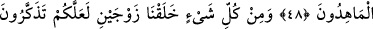
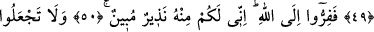
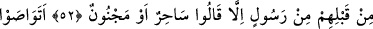
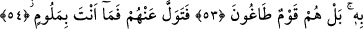

GÖĞÜ KENDİ ELLERİMİZLE
BİZ KURDUK
47. Göğü kendi ellerimizle biz kurduk ve biz bunu yapmaya elbette kadiriz.
48. Yeri de döşedik. (Bak) ne güzel döşeyiciyiz!
49. Her şeyden de çift çift yarattık ki, düşünüp öğüt alasınız.
50. O halde Allah’a koşun. Çünkü ben, size O’nun katından (gelmiş) açık bir
uyarıcıyım.
51. Allah ile beraber başka bir tanrı edinmeyin. Zira ben size O’nun tarafından
(gelmiş) açık bir uyarıcıyım.
52. İşte böylece, onlardan öncekilere her hangi bir peygamber geldiğinde hemen:
O, bir büyücüdür veya delidir, dediler.
53. Bunu (nesilden nesile) birbirlerine vasiyet mi ettiler? Doğrusu onlar azgın bir
topluluktur.
54. Artık onlara aldırma. (Davete uymamalarından dolayı) sen kınanacak değilsin.
“Göğü kendi ellerimizle biz kurduk.” Buraya “Biz göğü, sağlam olarak yâni güçlü bir
şekilde yaptık”, “Biz göğü sağlam bir tarzda yaptık” ve “Biz kudretimiz sebebiyle, onun
bir tezahürü olarak göğü yaptık” şeklinde mânâlar da verilebilir.
Âyetteki “sağlamlık”, kudret anlamındadır. Çünkü sağlamlık, güçsüzlüğün zıddı olan
dayanıklılık ve sertliği ifâde eder. Allah Teâlâ dayanıksız bir şey yapmaktan
münezzehtir. “Kudret”, Hayy olan Allah Teâlâ’nın kendi irâdesi ile bir şeyi yapma veya
yapmama husûsundaki gücüdür.
Kâşifî şöyle demiştir: Buna “ulûhiyet kuvveti”, denilmiştir ki mânâsı “yaratma
husûsunda biz gerekli kudrete sâhibiz” demektir.
Kâmus’ta belirtildiğine göre el-âd kelimesi tıpkı el-eyd gibi kuvvet ve sertlik
anlamındadır. “Kuvvetlendirmek, yardım etmek ve gücüne güç katmak” anlamındadır.
Rağıb şöyle demiştir: “El”, kuvvet ifâde ettiği için “Ben senin elinim, ben sana el